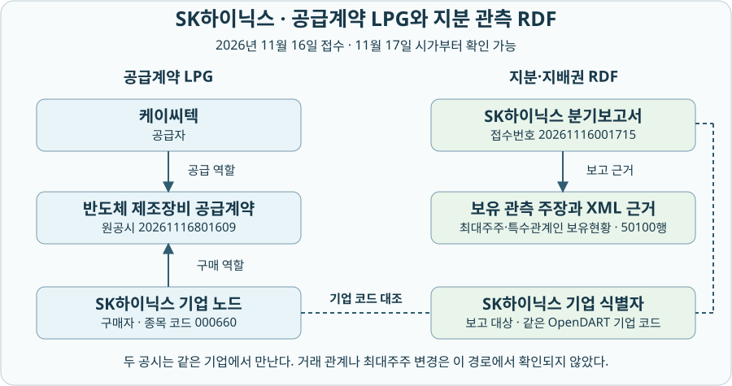

지배권 공시가 CLEAR·TRACE 매매에 미치는 영향
초록. 공급계약 그래프 기반 매매에 지배권 공시를 추가할 때 제목과 사건 근거가 주문 및 손익에 미치는 차이를 분석하였다. 기존 CLEAR·TRACE 연구와 동일한 7종목·39거래일에서 두 전략의 세 조건과 매수 후 보유를 비교하였다. 제목 조건은 CLEAR의 매수 세 건을 미뤘고, 통합 조건은 세 후보를 보유 관측으로 분류하여 기존 주문을 유지하였다. TRACE 주문은 세 조건에서 같았다. 매수 후 보유의 낙폭이 가장 컸으며, 통합 그래프의 추가 수익률 기여와 OWL 추론의 독립적인 주문 효과는 관찰되지 않았다. 정기보고서 사건창에서는 원문으로 확인한 최대주주 교체가 신규 매수와 겹치지 않았다. 동일 보유자의 지분율 변동에 따른 매수 보류는 주문 시점을 바꾸었으며, 두 지분율 비교 기준에서 결과를 대조하였다.
1. 서론
이전 연구는 공급계약의 당사자·유효 기간·근거를 사용하여 CLEAR와 TRACE의 매매를 비교하였다 [1]. 후속 사전 분석에서는 지분 관련 공시가 일부 매수와 겹쳤으나, 그 매수에 최대주주 변경 근거가 연결되지 않았다 [2]. 제목으로 포착한 공시와 사건으로 확인한 사실의 차이가 실제 체결과 손익에 얼마나 영향을 미치는지 확인할 필요가 있다.
본 연구는 이전 실험과 평가 기간·종목·체결 비용을 맞추고, 지배권 공시를 제목으로 확인한 조건과 통합 그래프에서 사건·정정·근거를 확인한 조건을 비교한다. 공시에서 판정, 체결, 종목별 성과까지 연결한 원장을 제시한다.
2. 관련 연구
공급계약 공시의 시장 반응은 공시 시점 전후로 연구되었고 [3], 기업 간 경제적 관계는 거래 상대의 정보 전달 경로로 활용되었다 [4]. TRACE는 과거 금융 그래프에서 학습한 관계 규칙으로 후보 경로를 줄이고 원문과 연결한다 [5]. 이번 실험은 기존 TRACE의 OpenDART 구현과 CLEAR의 계약 조건은 유지한 채, 지배권 근거가 신규 매수에 미치는 영향을 측정한다.
3. 방법론
3.1 공급계약 신호
CLEAR는 새 공시에 명시된 구매자와 동일 제품군의 기존 유효 계약을 확인한다. TRACE는 학습 표본에서 관계 경로와 상승·하락 빈도를 집계하며, 지지도 5 이상과 신뢰도 60% 이상인 규칙으로 빔 탐색을 제한한다. 빔 폭은 8, 최대 깊이는 3이다. 5거래일 공시 신호 합계가 0이면 기존 20거래일 가격 추세를 적용한다. 본실험에서 LLM을 호출하지 않았다. TRACE 관계 탐색과 구조화된 근거 확인을 코드로 실행하였다.
3.2 두 그래프의 연결
공급계약 LPG의 종목을 OpenDART 기업 코드로 대응시키고, 같은 기업의 지분·지배권 RDF를 조회한다. 두 자료가 같은 기업을 가리킨다는 사실은 조회의 출발점이다. 주문에 사용할 수 있는지는 공시가 보고한 내용과 그 근거로 판단한다. 그림 1은 두 그래프가 만나는 위치를 보여준다.

SK하이닉스 분기보고서의 「최대주주 및 특수관계인의 주식 소유 현황」 표에서는 13개 행을 구조화하였다. XML 50100행의 SK스퀘어 보유 현황을 예로 들면, 원문에서 추출한 값과 RDF로 적재한 값은 다음과 같다.
| 항목 | 원문에서 추출한 값 | 기존 백테스트 RDF에 적재 |
|---|---|---|
| 보유자와 역할 | SK스퀘어(주), 최대주주 | 미적재 |
| 주식 종류 | 의결권 있는 주식 | security |
| 기초·기말 주식 수 | 146,100,000주 → 146,100,000주 | 미적재 |
| 기초·기말 지분율 | 20.07% → 20.00% | 미적재 |
| 주장 유형과 원문 근거 | 보유 현황, XML 50100행 | reported_shareholder_position, supportedBy |
실제로는 공시가 reportsAssertion으로 보유 현황 행을 가리키고, 그 행의 supportedBy가 XML 근거 위치를 가리킨다. 파서는 보유자·역할·기초와 기말의 수량 및 지분율을 추출하지만, 실험에 사용한 RDF 적재기는 이 값들을 트리플로 내보내지 않았다. 따라서 기존 백테스트 배포본의 RDF만 질의해서는 위 표의 수량과 지분율을 복원할 수 없었다. 후속 실험에서는 같은 주장 노드에 보유자·역할·기초와 기말의 수량 및 지분율을 보강하였다. SK스퀘어의 주식 수가 그대로인 가운데 지분율이 변했다는 사실만으로 최대주주 변경을 판정할 수도 없다.
CLEAR와 TRACE는 기존 공급계약 신호로 매수 후보를 만들며, 신호 합계가 0이면 가격 추세를 사용한다. 지배권 쪽은 공통 보류 조건으로 붙였다. 정정본에 연결된 원공시, 양쪽이 보고하는 사건, 원문 근거 위치를 확인한 뒤 명시 유형 ControllerChange 또는 추론 유형 OwnershipEvent를 조회한다. 분기보고서는 PeriodicOwnershipReport에서 OwnershipObservation으로 분류되므로 보류 조건을 충족하지 않는다. 스맥의 정정본처럼 실제 변경 사건과 연결된 근거가 체결을 어떻게 바꿨는지는 4.7절에 제시한다.
3.3 세 비교 조건과 체결
① 기존 전략은 원래 주문을 낸다. ② 제목 조건은 최근 5거래일 내 반영할 수 있게 된 지분·지배권 공시가 있으면 신규 매수를 하루 미룬다. ③ 통합 조건은 같은 후보에서 원문 근거와 적격 지배권 사건을 확인했을 때 하루 미룬다. 다음 거래일의 시가에 기존 신호를 다시 평가한다. 같은 공시나 사건으로 반복해서 미루지 않는다. 접수일만 확인되는 공시는 다음 거래일부터 반영한다. 세 조건의 매도, 마지막 종가 청산, 편도 비용 10bp는 동일하다.
4. 실험과 결과
4.1 학습·검증·테스트 데이터셋
| 구성 | 기간 | 관측 단위와 사용처 |
|---|---|---|
| TRACE 학습 | 공시 2026-01-02~08-21 · 방향 라벨 01-05~08-24 | 기존 10종목의 197개 종목·거래일. 평가 전 확인된 다음 거래일 종가 방향으로 규칙을 채굴하였다. 학습 마감 기준은 09-30이다. |
| 별도 검증셋 | 없음 | 기존 지지도·신뢰도·빔 탐색 설정을 고정하였다. 신호와 체결은 이전 연구 원장과 대조하였다. |
| 주 비교 테스트 | 2026-10-01~11-26 · 39거래일 | 이전 연구와 같은 7종목, 273개 종목·거래일. 공급계약 LPG·일봉·지분·지배권 RDF를 기업 코드와 시점으로 연결하였다. |
| 확대 비교 | 동일한 39거래일 | 평가 전 공급계약 이력과 직전 21거래일 일봉, 평가 중 거래 가능한 일봉을 확보한 80종목. TRACE는 해당 종목의 평가 전 573개 관측으로 별도 학습하였다. |
7종목은 삼성전자, SK하이닉스, 삼성중공업, HD현대중공업, 현대건설, 삼성물산, 삼성전기이다. 지분·지배권 후보는 임원·주요주주 보고 52건, 대량보유 4건, 정기보고서 7건이다. 통합 주문 조건을 충족한 최대주주 변경·정정 근거는 관찰되지 않았다. 이 실험은 동일 표본 비교를 위해 이전 평가 구간을 재사용했다.
4.2 동일 7종목 성과
기존 결과의 매수 후 보유 −38.64%, CLEAR −4.12%, TRACE −1.92%를 재현하였다. 각 계정에 같은 초기 자본을 배정하였다. 최대낙폭과 샤프비율은 합산 자산에서 계산하였다. 보유 비중은 보유한 종목·거래일의 비율이다.
| 전략 | 순수익률 | 보유 대비 | 최대낙폭 | 샤프 | 보유 비중 | 체결 | 매수 보류 |
|---|---|---|---|---|---|---|---|
| 매수 후 보유 | -38.64% | +0.00%p | -40.96% | -4.24 | 100.00% | 14 | 0 |
| CLEAR · 기존 | -4.12% | +34.52%p | -6.60% | -2.45 | 12.09% | 20 | 0 |
| CLEAR · 제목 | -5.02% | +33.61%p | -7.17% | -3.68 | 10.99% | 20 | 3 |
| CLEAR · 통합 | -4.12% | +34.52%p | -6.60% | -2.45 | 12.09% | 20 | 0 |
| TRACE · 기존 | -1.92% | +36.71%p | -3.75% | -2.21 | 6.59% | 14 | 0 |
| TRACE · 제목 | -1.92% | +36.71%p | -3.75% | -2.21 | 6.59% | 14 | 0 |
| TRACE · 통합 | -1.92% | +36.71%p | -3.75% | -2.21 | 6.59% | 14 | 0 |

통합 CLEAR는 제목 CLEAR보다 0.90%p 높았고 기존 CLEAR와 같았다. TRACE는 세 조건에서 체결과 손익이 모두 같았다. OWL의 상위 유형 조회를 명시 유형 조회로 바꾼 대조 결과에서도 체결은 같았다.
4.3 종목별 순수익률
| 종목 | 매수 후 보유 | CLEAR · 기존 | CLEAR · 제목 | CLEAR · 통합 | TRACE · 기존 | TRACE · 제목 | TRACE · 통합 |
|---|---|---|---|---|---|---|---|
| 삼성전자 | -35.78% | -6.64% | -3.62% | -6.64% | -2.63% | -2.63% | -2.63% |
| SK하이닉스 | -40.24% | -3.88% | -8.55% | -3.88% | -12.75% | -12.75% | -12.75% |
| 삼성중공업 | -29.25% | +0.00% | +0.00% | +0.00% | +0.00% | +0.00% | +0.00% |
| HD현대중공업 | -44.81% | -2.18% | -2.18% | -2.18% | -2.18% | -2.18% | -2.18% |
| 현대건설 | -44.91% | -0.63% | -0.63% | -0.63% | -0.63% | -0.63% | -0.63% |
| 삼성물산 | -27.87% | -7.08% | -11.77% | -7.08% | -7.08% | -7.08% | -7.08% |
| 삼성전기 | -47.60% | -8.41% | -8.41% | -8.41% | +11.82% | +11.82% | +11.82% |
4.4 공시가 매수 날짜와 체결가를 바꾼 사례
제목 조건만 CLEAR의 세 매수를 다음 거래일로 미뤘다. 세 주문 모두 공급계약 신호가 +1이었다. 통합 조건은 해당 후보가 최대주주 변경을 입증하지 않아 기존 매수를 유지하였다. 매도는 각 비교 조건에서 같은 날짜·가격에 체결하였다.
| 종목 | 제목 조건의 공시와 원문 근거 | 기존·통합 매수 | 제목 조건 매수 | 공통 매도 | 거래 손익 차이 · 제목−기존 |
|---|---|---|---|---|---|
| 삼성전자 | 20261118000151 임원·주요주주 보고 · 역할 189·191행 | 11월 25일 시가 178,500원 | 11월 26일 시가 172,900원 | 11월 26일 종가 171,500원 | +3.11%p |
| SK하이닉스 | 20261116001715 분기보고서 보유현황 · 50100행 | 11월 17일 시가 1,098,000원 | 11월 18일 시가 1,154,000원 | 11월 24일 시가 1,212,000원 | -5.35%p |
| 삼성물산 | 20261116001150 · 20261119000068 분기보고서 보유현황 77011행 · 임원 역할 183·185행 | 11월 23일 시가 244,500원 | 11월 24일 시가 257,500원 | 11월 26일 종가 245,000원 | -5.05%p |
4.5 동일 기간 80종목 확대 비교
종목 수만 넓힌 비교에서 매수 후 보유는 −24.71%였다. 제목 조건의 신규 매수 보류는 CLEAR 18건, TRACE 16건이었고 통합 조건은 두 전략 모두 0건이었다. 이 표본의 TRACE 규칙은 별도 학습했으므로, 7종목 결과와 합산하지 않는다.
| 전략 | 순수익률 | 보유 대비 | 최대낙폭 | 샤프 | 보유 비중 | 체결 | 매수 보류 |
|---|---|---|---|---|---|---|---|
| 매수 후 보유 | -24.71% | +0.00%p | -30.57% | -3.23 | 100.00% | 160 | 0 |
| CLEAR · 기존 | -8.41% | +16.30%p | -12.63% | -3.13 | 23.69% | 244 | 0 |
| CLEAR · 제목 | -8.89% | +15.82%p | -13.05% | -3.38 | 23.11% | 234 | 18 |
| CLEAR · 통합 | -8.41% | +16.30%p | -12.63% | -3.13 | 23.69% | 244 | 0 |
| TRACE · 기존 | -8.43% | +16.29%p | -12.52% | -3.40 | 21.54% | 244 | 0 |
| TRACE · 제목 | -8.72% | +15.99%p | -12.82% | -3.59 | 21.03% | 234 | 16 |
| TRACE · 통합 | -8.43% | +16.29%p | -12.52% | -3.40 | 21.54% | 244 | 0 |
4.6 구성요소 제거 비교
각 전략의 공급계약 신호, 평가 종목·기간, 가격과 거래비용을 고정하였다. LPG 단독은 기존 전략으로 지배권 공시를 주문에 반영하지 않는다. LPG+RDF는 사건·정정·원문 근거를 확인하고 RDF에 명시된 ControllerChange 유형으로 적격 사건을 판정한다. LPG+RDF+OWL은 같은 절차에서 추론된 상위 유형 OwnershipEvent를 조회한다. 제목 조건은 별도의 비교 기준으로 앞선 성과표에 제시하였다.
| 표본과 전략 | LPG 단독 | LPG+RDF | LPG+RDF+OWL | 통합−LPG | 바뀐 체결 / 기존 체결 |
|---|---|---|---|---|---|
| 동일 7종목 · CLEAR | -4.12% | -4.12% | -4.12% | 0.00%p | 0 / 20 |
| 동일 7종목 · TRACE | -1.92% | -1.92% | -1.92% | 0.00%p | 0 / 14 |
| 확대 80종목 · CLEAR | -8.41% | -8.41% | -8.41% | 0.00%p | 0 / 244 |
| 확대 80종목 · TRACE | -8.43% | -8.43% | -8.43% | 0.00%p | 0 / 244 |
두 표본 모두 통합 조건을 충족한 지배권 사건이 0건이었다. 그 결과 세 구성에서 체결 종목, 날짜, 매수·매도 방향, 시가·종가 구분과 가격이 모두 같았다. 통합이나 OWL 조회가 성과를 바꾸는지는 적격 사건이 실제 매수 후보와 겹치는 표본에서 추가로 검증해야 한다. 구성별 실행 결과 · 체결 원장
4.7 정정 공시와 매수 후보가 겹친 사례
앞선 39거래일 비교에 이어, EC2에서 2026년 1월 1일부터 11월 27일까지 수집한 최대주주 변경 공시를 대상으로 사건 중심 보조 분석을 수행하였다. 추출 기록 221건에서 동일 기업의 원공시와 정정본이 corrects로 연결된 22쌍을 찾았다. 원공시와 정정본의 44개 관측을 각각 검토한 결과 38개는 기업 식별자가 일치하는 일봉을 확보하지 못했고, 1개는 관측창 일봉이 부족했으며, 1개는 적격 사건 판정에 필요한 RDF 조건을 충족하지 못했다. 남은 4개 관측에서 정정본 1건이 CLEAR와 TRACE의 매수 후보에 모두 겹쳤다.
공시 접수 다음 거래일부터 5거래일 동안 기존 전략의 신규 매수가 발생했는지 확인하였다. 각 종목의 수익률은 공시가 사용 가능해진 거래일을 기준으로 5거래일 전부터 10거래일 후까지 같은 가격과 편도 10bp의 비용으로 재계산하였다. TRACE의 스맥 사례는 4월 17일까지 확인할 수 있는 학습 표본 501건으로 규칙을 채굴한 뒤 4월 20일부터 5월 13일까지 평가하였다.
| 전략 | LPG 단독 | LPG+RDF | LPG+RDF+OWL | RDF 추가 효과 | OWL 추가 효과 | 매수 후 보유 |
|---|---|---|---|---|---|---|
| CLEAR | −6.57% | 0.00% | 0.00% | +6.57%p | 0.00%p | −10.94% |
| TRACE | −6.57% | 0.00% | 0.00% | +6.57%p | 0.00%p | −10.94% |
- 원문과 정정. 스맥은 4월 22일 특수관계인 간 시간외 대량매매에 따른 최대주주 변경을 공시하였다(XML 114행). 4월 24일 정정본은 정정대상 공시일을 4월 22일로 명시했다(97행). 정정 사유는 기재오류였으며(101행), SNT모티브 보유 주식 수의 세부 기재를 13,960,192주에서 13,960,332주로 수정하였다(112–114행). EC2에서 두 S3 원문을 다시 내려받아 추출 값과 XML 해시를 대조하였다. 원공시 · 정정공시
- 그래프 판정. 정정본의
corrects는 원공시를,reportsEvent는 그 원공시의 변경 사건을 가리킨다. 원문 증거 위치가 있는 이 사건은 RDF에서ControllerChange로 명시되어 있다. OWL은ControllerChange ⊑ OwnershipEvent에 따라 같은 사건을 상위 유형으로 분류하였다. 두 조회가 같은 사건을 채택했으므로 매수 보류도 같았다. 정정된 주식 수의 크기는 주문 규칙에 쓰이지 않았다. - 체결 변화. 두 전략 모두 공급계약 신호 합계가 0이었다. LPG 단독에서는 20거래일 가격 추세에 따라 4월 30일 시가 4,700원에 매수하였고, 추세 조건이 바뀐 5월 4일 시가 4,400원에 매도하였다. RDF를 추가한 두 조건은 정정 공시가 유효 관측창에 있어 4월 30일 매수를 다음 거래일로 미뤘다. 5월 4일 재평가에서 매수 요건이 사라져 현금을 유지하였다.
실행 가능한 표본에서 공급계약 공시가 직접 만든 매수와 최대주주 변경·정정이 겹친 사례는 0건이었다. 스맥에서 관찰된 6.57%p 차이는 가격 추세로 발생한 매수에 지배권 공시 보류 규칙을 적용한 결과이며, 두 전략에 공통된 한 건의 거래이다. 일봉이 없었던 관측의 결과는 미확인이다. 공시 선별·체결·XML 근거 원장
4.8 정기보고서의 최대주주 교체와 지분율 변동
EC2의 기존 OpenDART RDF에 정기보고서 12,828건의 보유자 행 83,706개를 보강하였다. 같은 주장 노드에 이름과 역할을 문자열, 기초·기말 주식 수를 정수, 기초·기말 지분율을 퍼센트 단위 소수로 추가하였다. Neo4j에서 증분 트리플 502,135개를 확인하였다. 집계행 또는 수량·비율 형식이 맞지 않은 12,631개 행은 보강에서 제외했고, 원문이 대시인 값은 비워 두었다.
공개 v1.1은 이 가운데 364,537개 트리플을 제공한다. 보고서와 XML 근거의 연결을 조회하려면 v1.1 보강본을 v1 명시 RDF와 같은 그래프에 불러온다. v1 명시 RDF 다운로드 · v1.1 보강 RDF 다운로드
후속 실험은 기업별로 먼저 공개된 직전 분기와 새 보고서의 최대주주를 대조한다. 두 보고서 각각에서 최대주주 이름이 하나로 식별되고 그 이름이 바뀌면 보고서상 최대주주 표기 변경으로 분류한다. 같은 최대주주의 현재 보고서 기초·기말 지분율이 다르면 동일 보유자의 지분율 변동으로 판정한다. 사업·반기보고서도 분기말 관측을 제공하므로 포함하였다. 이 판정은 공시에서 확인한 이름을 비교한 것이며, 별도 최대주주 변경 원공시의 법적 사건 판정과는 구분된다.
보고서 접수 다음 거래일부터 5거래일 이내의 신규 매수를 비교했다. 기존 전략은 공급계약과 가격 신호를 그대로 사용한다. 두 변동 모두 보류는 교체 또는 지분율 변동이 있으면 신규 매수를 한 거래일 미룬다. 교체만 보류는 같은 규칙을 코드가 검출한 최대주주 표기 변경에만 적용한다. 평가창은 보고서 사용 가능일 5거래일 전부터 이후 최대 10거래일까지이며, TRACE 규칙은 평가창 시작 전에 관측 가능한 자료로 채굴한다. 이미 보유한 주식을 강제로 매도하지 않으며 거래 비용은 편도 10bp다.
보고서 비교에서 최대주주 표기 변경 90건, 동일 보유자 지분율 변동 1,083건을 찾았다. 이 가운데 거래 가능한 시세가 있는 7건과 165건을 각각 재실행하였다.
| 관측과 전략 | 기존 | 두 변동 모두 보류 | 교체만 보류 | 매수 후 보유 | 보류 건수 두 변동 / 교체만 |
|---|---|---|---|---|---|
| 표기 변경 7건 · CLEAR | −1.71% | −1.71% | −1.71% | −5.50% | 0 / 0 |
| 표기 변경 7건 · TRACE | −1.71% | −1.71% | −1.71% | −5.50% | 0 / 0 |
| 지분율 변동 165건 · CLEAR | −3.57% | −3.11% | −3.57% | −3.90% | 28 / 0 |
| 지분율 변동 165건 · TRACE | −3.76% | −3.26% | −3.76% | −3.90% | 27 / 0 |
원공시 대조와 주문 중첩
시세가 확보된 최대주주 표기 변경 7건의 정기보고서 14개를 EC2에서 다시 읽고, 별도 최대주주 변경 공시가 있는 경우 변경 전후 당사자와 사유를 대조하였다. 별도 공시로 확인한 교체는 3건, 분기보고서의 변경 이력으로 확인한 교체는 1건이었다. 나머지 3건은 동일 법인의 상호 변경 또는 주석 차이였다. 일곱 관측 모두 CLEAR·TRACE의 신규 매수와 겹치지 않았다. 따라서 이 표본에서는 확인된 교체만 적용해도 주문 차이는 0건이다.
| 종목 코드 | 판정 | 원문에서 확인한 근거 |
|---|---|---|
| 005610 | 동일 법인 | 기존 파리크라상의 상미당홀딩스 상호 변경. 분기보고서 |
| 015590 | 교체 | 주식양수도에 따른 최대주주 교체. 변경 원공시 |
| 007590 | 교체 | 주식 증여 이후 최대주주 교체. 변경 원공시 |
| 004060 | 교체 | 흡수합병에 따른 지분 승계. 승계 법인이 이전 상호를 이어받음. 변경 원공시 |
| 200350 | 동일 법인 | 아티스트컴퍼니 표기의 주석만 변경. 반기보고서 |
| 372910 | 동일 법인 | 한컴과 구 한글과컴퓨터의 동일성을 보고서가 명시. 분기보고서 |
| 351320 | 교체 | 제3자배정 유상증자 이후 교체를 분기보고서의 변경 이력에서 확인. 분기보고서 |
지분율 비교 기준과 무작위 매수 지연
동일 보유자의 지분율 변동을 두 방식으로 계산하였다. 기존 방식은 한 보고서의 기초·기말을 비교한다. 대안은 연속 보고서의 기말끼리 비교한다. 변동 관측은 각각 1,083건과 684건이었고 두 기준에 공통된 관측은 645건이었다. 시세를 갖춘 공통 표본을 함께 제시해 표본 구성이 달라지는 효과를 확인하였다.
| 비교 기준 | 사건창 | CLEAR 보류 체결 / 취소 | CLEAR 차이 | TRACE 보류 체결 / 취소 | TRACE 차이 |
|---|---|---|---|---|---|
| 보고서 내 기초–기말 | 165 | 23 / 5 | +0.46%p | 22 / 5 | +0.49%p |
| 연속 보고서 기말–기말 | 127 | 16 / 6 | +0.55%p | 15 / 6 | +0.59%p |
| 두 기준 공통 | 116 | 16 / 4 | +0.53%p | 15 / 4 | +0.57%p |
무작위 대조에서는 기존 165개 사건창을 고정하고, 그 안의 신규 매수 중에서 공시 판정을 사용하지 않고 보류 대상을 뽑았다. 전략별로 원래 규칙과 같은 횟수인 28건과 27건을 한 거래일씩 미루는 절차를 2,000회 반복하였다. 평균 순수익률 차이는 CLEAR −0.02%p, TRACE −0.01%p였고, 모의 분포의 가운데 95% 범위는 각각 −0.30~+0.25%p와 −0.29~+0.25%p였다. 관찰된 공시 조건의 차이는 이 대조 범위보다 컸다. 다만 대조도 공시를 중심으로 정한 사건창을 사용했으며, 무작위 범위는 독립 기간의 신뢰구간이나 지분 정보의 인과효과를 뜻하지 않는다.

SPC삼립. 사업보고서는 파리크라상, 분기보고서는 상미당홀딩스를 최대주주로 기록했다. 두 관측의 주식 수는 3,508,240주, 지분율은 40.66%였다. 이름 비교는 표기 변경을 검출했다. 원문은 구 파리크라상의 상호 변경을 설명하므로 동일 법인으로 확인하였다. 두 전략 모두 신규 매수 후보가 없었다. 사업보고서 · 분기보고서
SK하이닉스. SK스퀘어는 직전 보고서와 현재 보고서에서 모두 최대주주였다. 현재 분기보고서의 기초·기말 주식 수는 146,100,000주로 같았다. 같은 보고서 안의 지분율은 20.07%에서 20.00%로 달라졌고, 직전 반기보고서 기말과 비교하면 20.50%에서 20.00%로 변했다. 교체만 보류하는 CLEAR는 케이씨텍 공급계약의 +1 신호로 11월 17일 시가 1,098,000원에 매수하였다. 지분율 변동까지 보류하면 11월 18일 시가 1,154,000원에 매수하였다. 두 조건 모두 11월 24일 시가 1,212,000원에 매도했다. 평가창 순수익률은 각각 +3.47%, −1.55%로 교체만 보류한 조건이 5.02%p 높았다. TRACE에서는 이 공시와 겹친 신규 매수가 없었다. 반기보고서 · 분기보고서 · 공급계약 공시
지분율 변동으로 보류한 매수 가운데 가격 추세가 만든 후보는 CLEAR 28건 중 27건, TRACE 27건 중 27건이었다. 사건창이 서로 겹칠 수 있고 거래 가능한 시세가 있는 관측만 평가했으므로, 표의 평균은 포트폴리오 성과로 해석하기 어렵다.
4.9 공시 반응 학습 CLEAR
CLEAR는 공급계약 공시를 낸 기업(0홉)과 그 공시의 직접 구매자(1홉)의 과거 반응을 학습한다. 1홉 후보에는 구매자가 새 공시에 명시되고 두 기업 사이에 당시 유효한 동일 제품군의 기존 공급계약이 있는 경우만 포함한다. 그래프는 공시와 주문 후보를 연결하며, 매매 신호의 방향은 과거 수익률로 정한다.
홉별로 공시를 신규·정정 유형과 공급사 매출 대비 계약 비중으로 묶고, 공시 다음 거래일 시가에 진입해 5거래일째 종가에 청산했을 때의 비용 후 수익률을 계산하였다. 같은 종목·거래일에 공시가 여러 건이면 학습 관측은 한 건만 사용하였다. 표본이 5건 이상인 패턴을 채택하고, 각 집단의 평균을 같은 홉의 전체 평균 쪽으로 조정하였다. 실제 매매는 최근 5거래일 공시 점수의 합이 양수면 보유하고, 음수면 현금을 유지한다. 합이 0이면 20거래일 가격 추세를 따른다. 매매 시가는 당일 시가이며 비용은 편도 10bp다.
2026년 9월 30일까지 결과를 확인할 수 있는 0홉 관측 967건과 1홉 관측 15건으로 학습하였다. 평가 기간은 10월 1일~11월 26일 39거래일이며, 필요한 거래일 시세를 갖춘 172종목에 동일한 초기 자본을 배정하였다. 앞 절의 규칙형 CLEAR는 해당 연구의 방식으로 기술하고, 이 절에서 CLEAR는 공시 반응 학습 전략을 뜻한다.
| 전략 | 순수익률 | 최대낙폭 | 샤프비율 | 체결 |
|---|---|---|---|---|
| CLEAR | −7.39% | −10.42% | −3.97 | 650 |
| 20거래일 가격 추세 | −7.59% | −10.69% | −3.88 | 652 |
| 매수 후 보유 | −18.85% | −23.34% | −3.34 | 344 |
가격 추세와 비교하면 CLEAR의 순수익률은 0.20%p 높았고 샤프비율은 낮았다. 종목·날짜·매매 방향을 기준으로 대조한 결과, CLEAR에만 있는 체결은 42건, 가격 추세에만 있는 체결은 44건이었다. 1홉에서는 신규 계약의 매출 비중 10% 이상 30% 미만 패턴 하나가 학습 기준을 충족했다. 1홉 점수를 빼고 다시 비교했을 때 바뀐 체결은 0건이었다.
삼성전기. 10월 6일 MLCC 공급계약의 금액은 매출 대비 2.50%였고 구매자는 공개되지 않았다. CLEAR는 공시 기업에 0홉을 적용했다. 학습 구간의 매출 비중 10% 미만 신규 계약 집단이 음의 점수를 받아, 두 전략이 10월 1일 시가 1,495,000원에 매수한 주식을 CLEAR는 10월 7일 시가 1,675,000원에 매도했다. 가격 추세는 보유를 이어가다 10월 14일 시가 1,372,000원에 매도했다. MLCC 계약 원문
이 구간은 앞선 연구에서도 사용하였다. 따라서 0.20%p 차이는 이 구간의 비교 결과이며, 새 기간의 성과는 추가 검증이 필요하다. 종목별 성과와 체결 원장
5. 논의와 한계
통합 그래프는 이 기간에 지분 관련 제목만으로 매수를 미루는 경우를 걸러냈다. 동일 39거래일 주표본에서는 적격 지배권 변경·정정으로 체결이 바뀐 사례가 없었다. 사건 중심 보조 분석에서는 별도 변경·정정 공시의 사건창에서는 스맥 한 건에서 체결 차이가 확인되어 일반적인 성과 차이를 추정하기 어렵다. 이 결과는 이미 평가에 사용했던 하락장을 동일 조건으로 재실행한 결과이며 독립 테스트셋에 대한 성과로 해석하지 않는다. 확대 비교는 거래 가능한 가격 자료가 평가 기간 내내 확보된 종목에 조건부이다.
부록 · EC2 재현과 원장
공시 반응 학습 CLEAR는 EC2에서 기존 계약 그래프와 두 일봉 아카이브를 사용해 재실행한다. 기본 평가 구간은 2026년 10월 1일~11월 26일이다.
PYTHONPATH=src python3.11 scripts/backtest_clear_hops.py \
"$GRAPH" "$ARCHIVE" "$LATER" --start 2026-10-01 > clear-learning-results.json같은 계약 그래프와 아카이브·보강 일봉, RDF 적재본을 사용한다. 다음 명령에서 --original-panel을 빼면 같은 기간의 80종목 확대 비교를 재현한다. 체결 원장의 panel은 두 표본을 구분한다.
PYTHONPATH=src python3.11 scripts/backtest_governance_integration.py \
"$GRAPH" "$ARCHIVE" "$LATER" "$RDF" "$OUTPUT" \
--start 2026-10-01 --end 2026-11-26 --original-panel공개 자료로 SK하이닉스 사례를 조회하려면 v1 명시 RDF와 v1.1 보강 RDF를 압축 해제하고, 두 N-Triples 파일을 같은 RDF 그래프에 불러온다. SPARQL 예제를 실행하면 SK스퀘어의 기초·기말 주식 수와 지분율, XML 근거 행을 확인할 수 있다. v1.1 ZIP 다운로드
EC2의 원문 추출 원장으로 정기보고서 보강과 주문 재실행을 두 단계로 재현한다. 첫 명령에 --load를 추가하면 EC2의 기존 Neo4j RDF에 증분 트리플을 병합한다.
PYTHONPATH=src python scripts/periodic_ownership_rdf.py \
"$OWNERSHIP" "$RDF" periodic-ownership.nt.gz periodic-pairs.json
PYTHONPATH=src python3.11 scripts/backtest_periodic_ownership.py \
"$GRAPH" "$ARCHIVE" "$LATER" periodic-pairs.json "$OWNERSHIP" "$BUCKET" \
> periodic-order-results.jsonEC2 추가 비교는 같은 입력으로 scripts/audit_periodic_ownership_robustness.py를 실행한다. 이 스크립트는 지분율 정의별 사건창과 무작위 매수 지연 대조를 JSON으로 출력한다. 사건창별 재현 원장 · 7건 원공시 대조 원장 · 추가 검증 코드
PYTHONPATH=src python3.11 scripts/audit_periodic_ownership_robustness.py \
"$GRAPH" "$ARCHIVE" "$LATER" periodic-pairs.json "$OWNERSHIP" "$BUCKET" \
> periodic-robustness.json정정 공시 사건창 비교는 동일 입력에 최대주주 변경 추출 원장과 S3 버킷을 추가하여 재현한다.
PYTHONPATH=src python3.11 scripts/audit_governance_correction_orders.py \
"$GRAPH" "$ARCHIVE" "$LATER" "$RDF" "$OWNERSHIP" "$BUCKET" \
> correction-order-audit.json정정 공시 비교 코드 · 재현 코드 · 체결 원장 · 보류 원장 · 종목별 성과 · 전체 결과와 원문 근거 · 학습 기간과 결과 요약
참고문헌
- FINTOS. (2026). CLEAR와 TRACE — OpenDART 공시를 활용한 매매 전략 비교. 연구 글
- FINTOS. (2026). 공급계약과 지배권 공시의 시점별 겹침. 사전 분석
- 우민철, 박수철. (2017). 중요 공시에 대한 시장반응－단일판매 공급계약 공시를 대상으로－. 경영연구, 32(1), 205–229. DOI
- Cohen, L., & Frazzini, A. (2008). Economic links and predictable returns. The Journal of Finance, 63(4), 1977–2011. DOI
- Ding, Q., et al. (2026). TRACE: Temporal rule-anchored chain-of-evidence on knowledge graphs for interpretable stock movement prediction. arXiv:2603.12500v1. 프리프린트